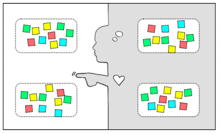

Persona是什么？这个跟你之前提到的Empathy有何关系？
就像Kim Goodwin在Designing for the Digital Age: How to Create Human-Centered Products and Services一书中的定义：
Personas are archetypes that describe the various goals and observed behaviour patterns among your potential users and customers. They can be used to help guide decisions about product, features, navigation, visual design.
其中的关键点在于Persona本身是决定产品、功能、导航以及视觉设计的指导因素，和设计决策相结合的Persona才是有效的。
我自己对它定义是：寻找并具化目标用户，最后让这个有血有肉的样本，并一直贯穿在设计过程中。这本身就是一种Empathy（移情）：制造一个供研究的样本，让它变得丰富，让整个设计变得贴切和有带入感。
带入感？你又在说我不懂的词了？
我也不知该如何用一个准确的词语来表达这个，它的意思是制作一个丰富的用户样本帮助我们带入他所在的情境（context），让我们在这种情境下去思考他会不会用，会怎么用。
传统以功能为基础的设计过程存在一个巨大的假设，即所有目标消费者都是用户，为了使得这种假设趋近于成立，功能的堆砌变成了灵药。不论你要什么或者怎么用，只要我给你足够多，必然有一款适合你。
体验设计的精髓便在于，恰到好处地设计出最契合用户使用场景的体验，而这种体验是不知不觉中赋予用户，是笑而不语的。
笑而不语？能举出一个例子吗？
这就是那句著名的＂Don't make me think＂。我能想到最美的例子就是ipod或者iphone的耳机设计，想想你不想听的情境是怎样的？且慢，不论你的场景如何，你总是要摘掉耳机，而当你拔掉耳机的同时，音乐也自动停止，你不需要把机身从口袋里拿出来。此外当苹果把耳机接口放在了尾端，也使得这一切变得自然，它让你拔除耳机的动作变得简单。这一切都来自于对用户使用情境的研究，这就是我说的笑而不语。
因为我们的设计基于对于用户使用情境的研究，那么Persona帮助我们更好地进入这种情境，当营造出逼真的情境，就能根据情境判断用户用什么和怎么用，是吗？
完全正确，情境营造的越成功，越能设计出贴合用户使用情境的设计，这就是像是战斗机的风洞测试，你得模拟出各种气流强度和方向，才能测试出机体在不同真实场景下的性能表现。
确实是这样，那么请问有些什么样的实践可以运用呢？
这里我介绍我经常使用的两种实践，有时候这两种实践可以结合起来。这两种分别是：User Profile和Empathy Map。
首先，我们来讲User Profile。其实就是用尽量描述性的语言把用户展现出来，这就像去婚介所要你填的那张表，你不要这样看着我，我以前没去过以后也不会去。不管怎样，不论你是叫它用户调查还是用户访谈，这种东西一直存在，只是我们基本上不用调查问卷而使用更加互动的方式。
建立User Profile的可以有几个方面：
- 你是谁-关于你的名字，性别，年龄，婚姻情况，收入。这里有个有意思的现象，名字对我们来说很重要，一个好的名字提高了沟通的效率，如果是一个项目助理，她很有可能叫做苏苏，如果她是个人事主管她可能叫做Viona，起名学请参考港剧，想当犀利。
- 你的工作-你的工作占据了生活的想当一部分时间，好问题包括，你在哪个行业，职位是什么，同事怎么看你，你怎么看同事，上一次加薪的比例，换过多少工作等等。
- 你的生活-生活当然是必不可少的部分，好问题包括：有无房产，住在哪里，家庭是怎样的等等。
此外根据你产品方向的不同，也许还要添加以下几个方面的内容：
- 你如何进行社交？
- 你如何表达意见？
- 你如何获取信息？
- 你如何进行交流？
- 你如何进行购物？
在进行User Profile的过程中可以是，邀请每一位参与者，对于每一个大类使用纸贴（post-it）进行头脑风暴，再由Facilitator进行晒选，对于互相矛盾的让参与者进行决定。切记住每个问题的答案应该是有关联并符合绝大多数情况，例如对于一个月入在五千元以下刚进入职场的小白领，在大多数情况不会在一线城市拥有自己的房产。
同时，一个吸引人的人物头像也可以增加这个过程的参与感，你可以手绘，如果你有足够的美术功底，也可以在网上搜索真实图片。记住要把你得到的结果画在大白纸贴在墙上或者白板，这样可以让你们的交流更加专注和高效。
既要忘记你想要设计的产品，又不能完全抛弃。比如说当你要设计一款让通勤者更加愉快的产品，你的问题也许要更加专注于他所常用的交通工具；而若你的设计重点在于让社交更加简单，你的问题则更应关注他与人的交流方式。
在真实场景下，我们会邀请客户最接近终端消费者的部门，很多情况都是市场部。在此之前，我们一般会对这个客户所提供服务的反馈进行调查，手段包括通过微博，各种口碑网站，或者真实的用户访谈。目的是在实践过程中引导客户更加真实地进行描述。
同时请在User Profile的过程中引入优先级的概念，这个实践应该是个收敛的过程而非发散。如果你产生了20个风格迥异的Persona则说明你并没有引导你的客户关注那些最具市场价值的用户。我的经验是不超过五个。
我在我的笔记本上画出了一个User Profile的例子给你参考。
注意在很多定义里面认为，Persona应该是Fictional Character的（比如这里），可我不倾向于把Persona中描述得过长，而是更多的使用一些短语，我觉得过长的描述让人不愿意去阅读，便失去了价值。
Persona在未来将成为你很多其他实践的基础，甚至一直延续到开发阶段，例如TnoughtWorks为一家知名会计事务所制作税务软件时创造的虚拟人物Kayla，一直到产品上线后都是各种邮件交流中的高频词。
你现在明白了User Profile是什么意思了吗？
我差不多了解了，那Empathy Map又是什么呢？
Empathy Map是另外一种帮助设计师和客户一起建立目标客户形象的工具，比起User Profile，Emapthy Map更加偏向于客户的感知、情感、行为，它通常分作这么几个部分：
- SAY：他说过什么？
- DO：他做了什么？
- THINK：他在想了什么？相信什么？害怕什么？
- FEEL：他的感受如何？

我们通常把目标客户放在中间，在其周围添加上我们的观察——写在便利贴上贴在周围，例如下面的样子。
关键的是，我们希望从上面四条中形成对需求（Need）的提炼，例如我们假设一个完整的Emapthy Map是：
- SAY：“我明天就去装XX软件”；
- DO：他并没有装这个软件；
- THINK：我不会装，我最后要麻烦别人帮我；
- FEEL：好麻烦。
在上面这个情景中，我们可能提炼的需求有：
- 怎么让安装这个软件不麻烦
- 怎么不用安装就能完成需求
- 怎么让麻烦人变得更加简单
通过Emapthy Map的整理，可以帮助我们从心理和行为的纬度间接推导出需求，而不只是简单问客户需要什么。
那么这些实践一定能得出准确的客户需求吗？
没有任何一种设计实践是银弹，但设计过程要远比设计结果有价值，这些实践的目的并不在于得到一个完美的结果，因为设计不是科学，而是通过对于客户的理解产出“足够我们进入下一步”的东西，这就是“假设”，接下来，我们要么用最快的时间推出可使用的产品原型、要么带着这些假设再到客户中进行验证，因为也许你所想到完美的Persona并不存在。
这样的过程也帮助设计师团队暂时不去讨论解决方案，而在用户的角度更多思考可能的：
- 驱动：什么时候会触发对这个产品的需要？
- 需求：期待产品做什么？
- 期待：对产品满意的结果是什么?
至于“怎么做”，暂时可以抛在一边。
（编者案：这是篇没有完结的系列，实际上应该有对Ideation、Prototype、Feedback的讨论，我争取在近期将这个系列补充完整。）